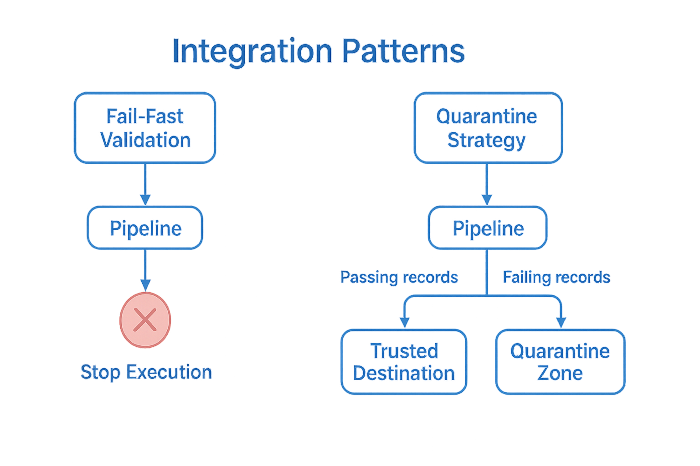

Integration Patterns#
Once you’ve defined your checks and run the validation engine, the most important question becomes: What Do You Do with the Results? SparkDQ provides a structured result interface that makes it easy to turn validation into actionable logic within your Spark pipeline. Depending on your quality strategy, you can either stop execution on critical errors or flexibly route valid and invalid data to different destinations.
Here are two practical approaches that you can implement with just a few lines of code.
{kind=link}
Fail-Fast Validation#
Use this pattern when data quality is a strict requirement and no compromise can be made. This strategy ensures that even a single violation of a critical rule is enough to halt the pipeline execution entirely. In this mode, no data will be written downstream, which prevents the propagation of incorrect or incomplete data into your production systems, data lake, or reporting layers.
This is ideal when#
Your downstream consumers demand complete trust in the data
You operate in regulated domains or support finance-grade analytics
You want to stop problems early instead of fixing them late
Benefits#
✅ Guarantees only clean data reaches production tables
✅ Instant visibility into broken pipelines or upstream regressions
✅ Encourages a culture of data ownership
Implementation Tip#
if not result.summary().all_passed:
raise RuntimeError("Critical checks failed — stopping pipeline.")
Quarantine Strategy#
This strategy separates validated data into two distinct paths:
✅ Passing records are forwarded to a trusted destination (e.g., a data lake or curated table).
❌ Failing records are redirected to a quarantine zone for inspection, remediation, or alerting.
The quarantined dataset retains all original input columns and is enriched with structured metadata — including validation errors (_dq_errors), failure severity levels, and the validation timestamp. This enables targeted analysis, quality monitoring, and the ability to track recurring issues over time.
This rich context makes it easy to#
Analyze the most frequent failure reasons
Associate validation errors with a specific validation timestamp (shared with the summary)
Correlate issues with specific columns or severity levels
Build dashboards or alerts around specific validation failures
Benefits#
✅ Clean data flows forward uninterrupted
✅ Invalid records are saved with full context (_dq_errors, _dq_passed)
✅ Enables smarter debugging and long-term quality improvement
Implementation Tip#
result.pass_df().write.format("delta").save("/trusted-zone")
result.fail_df().write.format("delta").save("/quarantine-zone")
Choose Your Pattern#
These patterns give you full control over the flow of validated data — and turn your quality checks into real operational safeguards. Whether you need strict enforcement through fail-fast validation or prefer a more flexible quarantine approach that allows for inspection and remediation, SparkDQ helps you enforce data quality exactly where it matters most.
Choosing the right strategy depends on your use case, your data consumers, and your tolerance for risk. You can stop bad data at the gate, safely isolate problematic records for further analysis, or even combine both approaches for different stages of your pipeline.
No matter how simple or complex your setup is, SparkDQ provides a clean and composable way to act on the truth in your data — so that quality becomes an integral part of your data workflows, not an afterthought.
üöÄ Next Step: After explaining how data validation works with the framework, the next section provides an overview of all available built-in checks.